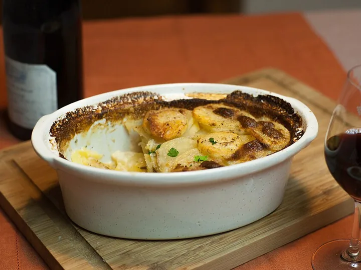

What you can cook
6 ready · 9 need one thing
38FRIDGE
11FREEZER
24PANTRY
11SPICES
Ready now

Menemen
fridge, pantry, spicesAll in25m
Smash Burger
fridge, freezer, pantryAll in20m
Poulet à la Moutarde
fridge, pantryAll in45m
One thing away

Shakshuka
fridge is short — red pepperBuy 140m
Mapo Tofu
fridge is short — silken tofuBuy 130m
Gratin Dauphinois
fridge is short — heavy creamBuy 1110m